カムイみさかスキー場
| 日付 | 2018年2月18日（日） |
|---|---|
| メンバー | 家族（妻、長女・6歳、長男・4歳） |
| アクセス | 車 |
前回のスキー旅行で子供たちがスキーを気に入ったため
今度は日帰りスキーに挑戦してみることにする。
場所は昨年も訪れたカムイみさかスキー場。
少々混雑するが、首都圏から近い便利なスキー場だ。
今回から安全のためヘルメットも購入した。スキーセットをレンタルし準備万端。
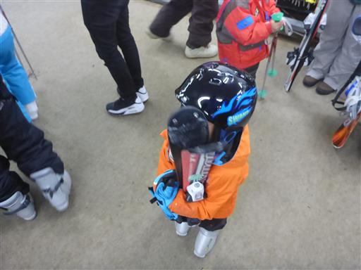
とにかく人が多い。昨年訪れたとき以上の人出だ。平昌オリンピックの影響だろうか？
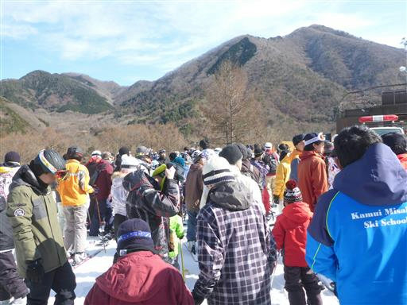
リフト待ちの時間が長いがゲレンデは比較的空いている。
もう少しリフトを増やしてほしいところだ。
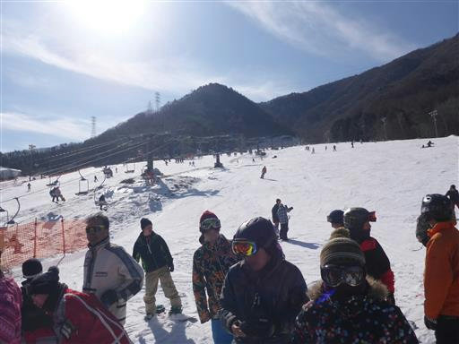
このスキー場は人工雪スキー場。周囲の山々にはあまり雪が積もっていない。
この背景だとあまりスキーという雰囲気は出ない。
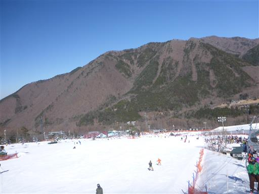
遠く北アルプスの山々が見えている。
今日は空気が澄んでいて、遠くの景色だけでも雪山が見られてラッキーだ。
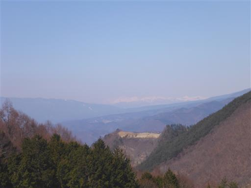
子供たちは午前中だけスクールに預ける。この中のどこかでレッスンを受けているはずだ。
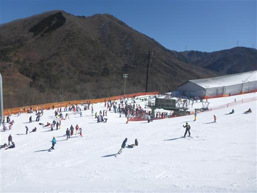
12時になったので迎えに行く。
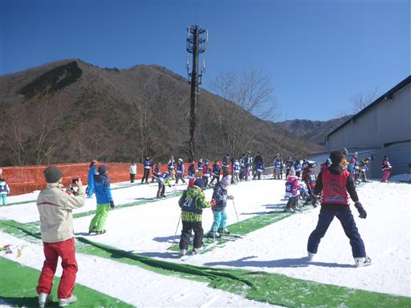
息子が滑って斜面を下りてくる。ある程度滑れるようになったようだ。
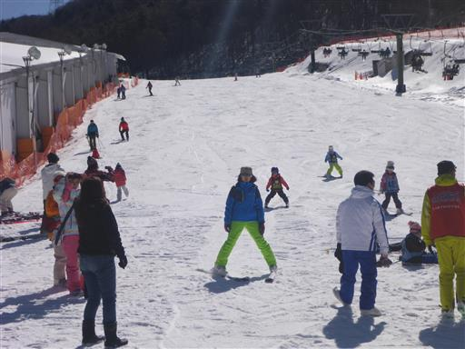
息子と娘を別のレベルのグループに入れたのだが、ちゃんと集団レッスンを受けられたようだ。
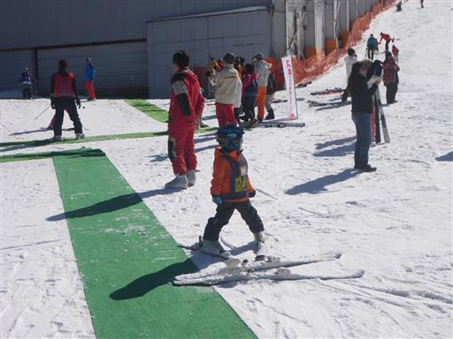
しばらく待つと娘も戻ってくる。
最初は弟と一緒じゃないと嫌と言っていた娘も、問題なさそうだ。
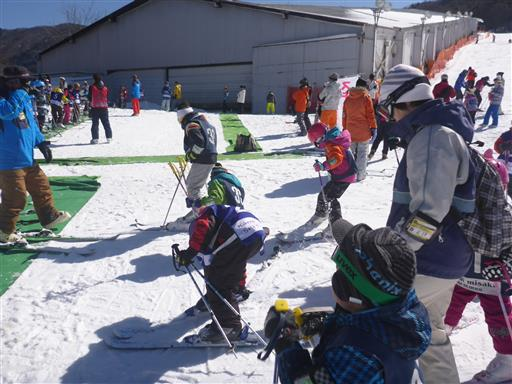
レストランに移動して昼食。大混雑のレストランは席取りにかなり苦労した。
ここまで混雑すると、さすがにちょっと辛い。
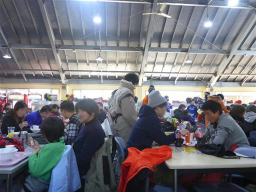
午後からはリフトに乗って家族4人で滑る。
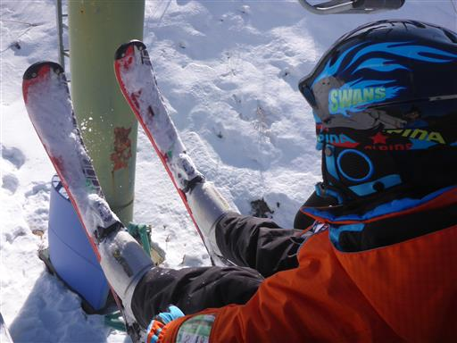
緩斜面であれば問題なく滑れる。息子は少し意志通りに曲がれるようになったようだ。
その後、初心者コースから通常コースに移動したが、何とか滑れていた。
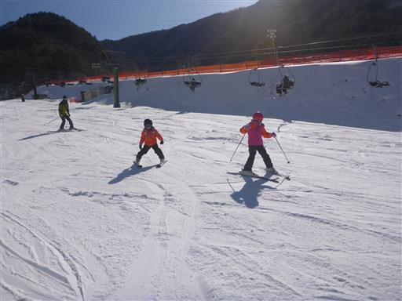
3時過ぎに切り上げる。
日帰りスキーは、親は大変だが子供たちはたっぷり楽しめたようだ。
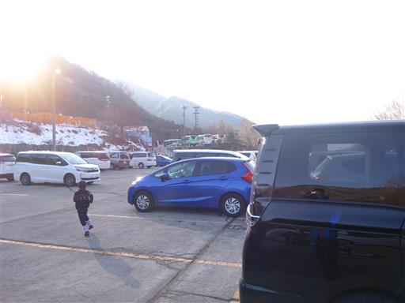
他の記録